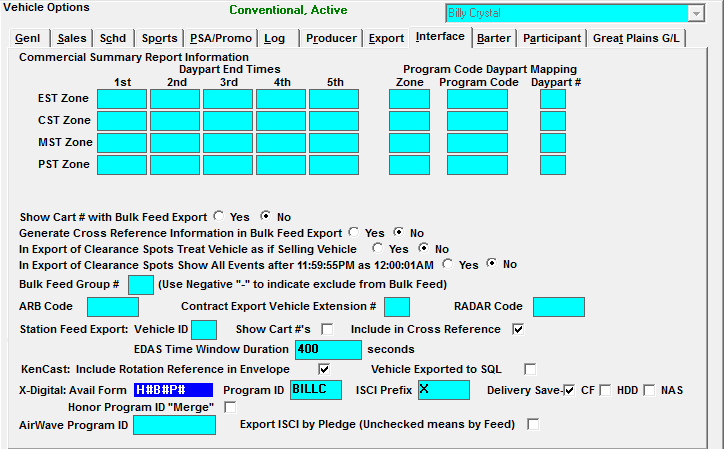

Traffic System Setup
Traffic Site Options
Export Tab
Check the appropriate X-Digital options on in the Traffic Site Options -> Export tab.
- X-Digital: By Break or By ISCI: These settings affect the file method choices in the Vehicle -> Options -> Interface Tab
- Select “by Break” if using the Cue Model Interface
- Select “by ISCI” if X-Digital will be fed through Cumulus
- Include Advertiser Abbreviation with ISCI: If checked on, and you are using the “by Break” method, the advertiser name will either be replaced by the advertiser abbreviation if it’s 6 characters or less (as defined in the List -> Advertisers screen), or it will be abbreviated to the first 6 characters of the advertiser abbreviation. The abbreviation will be followed by the Product, which is obtained from the contract. The combined advertiser/product will show a maximum of 15 characters. The exports that will show the Advertiser/Product are:
- Affiliate:
- X-Digital File Delivery and Spot Insertions
- ISCI Cross Reference
- Traffic:
- Audio ISCI Title
- Audio MP2
- Midnight Based Hours: if checked on, all spots are exported using hours that begin counting at midnight (starting at Hour 0), so that for example 6AM will be indicated as Hour 6 on the export. In addition, if there are time zone adjustments defined on the Vehicle Options time zone table for the vehicle being exported, the adjustments are ignored for the X-Digital Spot Insertions export, and all spots are exported as if in the X-Digital Head End time zone, as specified on the Traffic Site Options -> Export tab, in the head end time zone field. (For more information on the head end time zone setting, please see the Traffic Site Options help document that is available on the Counterpoint website.) When the Midnight-Based Hours option is not checked, the first hour of the program exported is one (1), regardless of what time of the day it begins, and each subsequent hour is numbered accordingly, starting from 1. For example: if the program starts at 6AM, breaks in the 6AM hour will be Hour 1. Breaks in the 7AM hour will be Hour 2, and so on.
- Unit ID by Affiliate Spot ID: Uses an internal code (AST) as a spot ID in the X-Digital export
Vehicle Options
In the Vehicles -> Options -> Interface tab, set up the two X-Digital items:
- Avail Form
- Program or Vehicle ID- This is the code that X-Digital uses to identify the vehicle. This code must match what is in the X-Digital system exactly.
- This comes from the Code field in the X-Digital system
(Version 6.0)

You can print or export the Vehicle Summary Report from Traffic and use that as a working report to define the Avail Form and Program ID.
There are three delivery methods for X-Digital; Hour and Break (HB) or Hour and Break and Position (HBP) and/or ISCI. In versions prior to Version 7.0, you may only select one method.
(Version 7.0)
CUE Model Interface (Break: H#B# / H#B#P)
Counterpoint assigns the code to each vehicle/program, and then, numbers the hours, breaks, and positions within the break. The Counterpoint Setup is defined as Hour/Break or Hour/Break/Position.
Hour/Break Method
H#B# Avail Form: For each day on each station, Counterpoint creates the XDS data file that contains the codes for each program, hour, and break, where a regional spot is booked, along with the ISCI code for that regional spot.
When the export is created, all spots in the break will be sent if one spot has regional copy.
Hour/Break/Position Method
H#B#P# Avail Form: For each day on each station, Counterpoint creates the XDS data file that contains the codes for each program, hour, break and position, where a regional spot is booked, along with the ISCI code for that regional spot.
When the export is created the regional copy is sent.
Merging Spots between Programs
Since X-Digital cannot air multiple programs simultaneously, if spots need to be merged from multiple programs into multiple programs, enter MERGE in the Program ID field and check Honor Program ID “Merge”. If left unchecked, the spots will not merge onto another vehicle.
- Program ID: The Program ID field is used with the HB and HBP Avail forms. It can be up to 8 alphanumeric characters and is case sensitive. It must match the case of the code as it was specified in the X-Digital when it was setup. If they do not match, no split copy will air
- ISCI Prefix: Enter the Prefix to be added prior to each ISCI name for the ISCI Cross Reference Export
- Delivery Save: this is where the ISCI will be saved on the Affiliate’s X-Digital PC
- CF- Compact Flash
- HDD- Hard drive
- NAS- Network Attached Storage
National ISCI Model Interface (ISCI)
National ISCI Model Interface (using Cumulus satellite services. For each day for each station, the Counterpoint file for XDS contains the ISCI code for the generic spot being replaced, and the ISCI code for the regional spot that replaces it.
- Vehicle ID: The Vehicle ID field is used with the ISCI Avail form. It can be up to three characters, and must be greater than 0
- ISCI Prefix: Enter the Prefix to be added prior to each ISCI name for the ISCI Cross Reference Export
Airing Instructions for spots:
Replacement ISCI information in the file is sent only once for a day. If the national generic spot runs 10 times in a day all spots will be replaced. This method lessens the volume of ISCI data, but prevents multiple regional spots from rotating in place of one generic spot. This is not a Counterpoint limitation but a design specification.
Delivery Save
Delivery Save is where the ISCI will be saved on the Affiliate’s X-Digital PC. The available options are:
- CF- Compact Flash
- HDD- Hard drive
- NAS- Network Attached Storage
Pre-Feeds
The Pre-Feed feature (Traffic -> Programming -> Links) will allow spots to be transmitted via XDS prior to their airing date/time.
The XDS system can transmit spot information three ways:
- Record the program with split copy
- Record the program without split copy and play it back at a specified time within the X-Digital equipment
- This is the option that requires the X-Digital export to be sent each day between the Pre-Feed day and Sunday.
- Play the program live
For Pre-Feeds to work with XDS, the vehicle must air on Saturday or Sunday for one day only, the network must be using the ISCI Avail XDS method, and be utilizing Engineering or Delivery Links. If the vehicle airs on more than 1 day over the weekend, this method will not work.
The X-Digital export can be generated for any day between the pre-feed day and through Sunday and the system will automatically adjust the dates, even though the vehicle only airs on one day. This is because Counterpoint doesn’t know when the affiliate is actually going to air the program, and will therefore adjust the dates for any date the export is generated for, as long as it’s between the first pre-feed day and Sunday.
Example: There is a vehicle that normally airs on Sunday 4/6, and there’s an AC Delco spot airing in that vehicle on 4/6, and the pre-feed day is Thursday. The X-Digital export can be generated for Thursday 4/3 through Sunday 4/6, and the spots on the report will be the same, with just the date changed. So that AC Delco spot will appear on the Thursday, Friday, Saturday, and Sunday export.